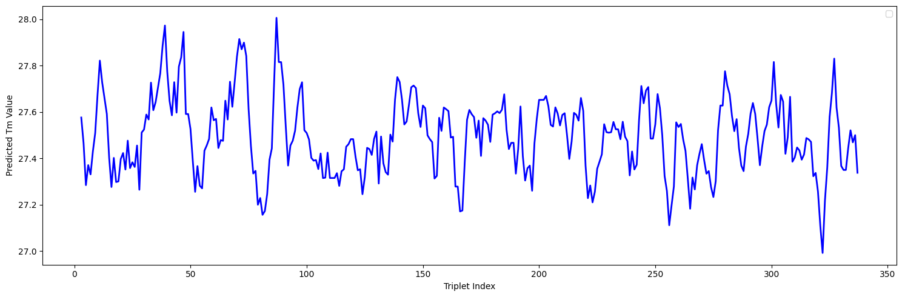

My name is Jake Cordery, I find machine learning and all things related
equally fascinating and baffling - I have done alot of different research and
engineering projects within the deep learning space in order to gain a
general overview of the most prominent methods in computer vision, time-series
forecasting, language processing, etc. At the moment I am looking to do a PhD
in deep learning, applied to the field of disease/medicine. To me, this is
the ultimate use of AI - to change people's lives and even lifespans.
The detection and prevention of life-altering or life-threatening diseases is the
area I want to dedicate myself to.
On top of this, I am starting my own company - Pioneer.AI, offering private LLM services to small to medium companies who do not have in-house GPUs and require that company data is never used for training. The scope of responsibilities that founding a company brings has been a great learning experience, and has intoduced me to many new skills within DevOps, legal, marketing and buisness as a whole.
I have a 1st class degree in BSc (Hons) Mathematics from the University of York (2022-2025), winning the best programming project prize for my dissertation, and being runner up for best overall prize (highest mark). Currently, I am completing my Master's degree in Artificial Intelligence at St. Andrews University.
Below is a summary of many of the projects I have completed in the realm of machine learning, data science and data analytics. The projects are in chronological order.
On top of this, I am starting my own company - Pioneer.AI, offering private LLM services to small to medium companies who do not have in-house GPUs and require that company data is never used for training. The scope of responsibilities that founding a company brings has been a great learning experience, and has intoduced me to many new skills within DevOps, legal, marketing and buisness as a whole.
I have a 1st class degree in BSc (Hons) Mathematics from the University of York (2022-2025), winning the best programming project prize for my dissertation, and being runner up for best overall prize (highest mark). Currently, I am completing my Master's degree in Artificial Intelligence at St. Andrews University.
Below is a summary of many of the projects I have completed in the realm of machine learning, data science and data analytics. The projects are in chronological order.
A project exploring the mathematical and statistical side of disease modelling
(as my dissertation focussed on the use of deep learning methods).
It combined the skills and experience gained in many of my final year modules
at York, and tested the advantages of the Julia programming language, including
the packages Turing.jl and DifferentialEquations.jl.
I found that Bayesian modelling enables a strong idea of how a disease may spread through a population, with much less data and computational power than deep learning methods.
Thank you to Dr. Gustav Delius (University of York) for offering supervisory comments in order to improve the results of this project.
I found that Bayesian modelling enables a strong idea of how a disease may spread through a population, with much less data and computational power than deep learning methods.
Thank you to Dr. Gustav Delius (University of York) for offering supervisory comments in order to improve the results of this project.


My undergraduate dissertation project,
for BSc Mathematics. This project entailed original research into
the deep learning architectures LSTMs (long-short term memory) and
GCNs (graph convolutional networks) in time-series forecasting. It
won the 'Best Novel Programming Project' Prize in 2025 from the
University of York and the Leeds-based medical software company, TPP.
I found that the most effective deep learning models were the LSTMs, however, my work suggests that statistical methods such as ARIMA are still the gold-standard for time-series prediciton.
Thank you to Dr. Richard Bingham at the University of York for supervising this project.
I found that the most effective deep learning models were the LSTMs, however, my work suggests that statistical methods such as ARIMA are still the gold-standard for time-series prediciton.
Thank you to Dr. Richard Bingham at the University of York for supervising this project.


A research project with the Director of
Mathematical Sciences at York - Mitya Pushkin. The project
is a start toward the greater goal of developing a diffusion model
to generate novel collagen sequences. To make this possible, however,
there needs to exist a reliable in silico method of testing whether
these novel sequences of collagen have a realistic set of properties.
This is the reasoning behind my implementation of Markus J. Buehler's paper 'CollagenTransformer: End-to-End Transformer Model to Predict Thermal Stability of Collagen Triple Helices Using an NLP Approach'. The paper being a fe years old meant that the Python Notebook on the github repo for the paper was no longer working and returned inaccurate values. So firstly, a lot of time was spent in finding the correct package versions by trial and error. Then, the CollagenTransformer was tested on data from the department, to ensure that the model was accurate (illustrated below).
Then, a literature review was conducted in the realm of de novo generation of protein and collagen sequences. Overall, this determined that currently, while de novo generation of proteins (not including collagens) is a promising direction, there is currently not enough data on the sequences of collagen to train a reliable model.
This is the reasoning behind my implementation of Markus J. Buehler's paper 'CollagenTransformer: End-to-End Transformer Model to Predict Thermal Stability of Collagen Triple Helices Using an NLP Approach'. The paper being a fe years old meant that the Python Notebook on the github repo for the paper was no longer working and returned inaccurate values. So firstly, a lot of time was spent in finding the correct package versions by trial and error. Then, the CollagenTransformer was tested on data from the department, to ensure that the model was accurate (illustrated below).
Then, a literature review was conducted in the realm of de novo generation of protein and collagen sequences. Overall, this determined that currently, while de novo generation of proteins (not including collagens) is a promising direction, there is currently not enough data on the sequences of collagen to train a reliable model.

A project based on a
Kaggle competition
whereby the RSNA (Radiological Society of North America)
curated the largest public dataset consisting of around 2,000
patients, with more than 100,000 slices of MRI scans.
A U-Net was trained to predict whether the patient has lumbar degeneration as well as the level of severity of said condition (normal/mild/severe). The RSNA provides a dataset of 1,975 patients of 35+ MRI scans.
My U-Net, trained from scratch, achieved roughly 66% accuracy on the evaluation set, which is a 60% increase on approaches with a pre-trained CNN, such as a ResNet.
A U-Net was trained to predict whether the patient has lumbar degeneration as well as the level of severity of said condition (normal/mild/severe). The RSNA provides a dataset of 1,975 patients of 35+ MRI scans.
My U-Net, trained from scratch, achieved roughly 66% accuracy on the evaluation set, which is a 60% increase on approaches with a pre-trained CNN, such as a ResNet.

A data science project completed in the
module 'Becoming a Bioscientist IV: Research in Action' at the University
of York. This project persued the question "Is there a correlation
between the receding tree line* and the microbes found there?".
Results showed that there were some data which pointed toward specific bacterial communities contributing to the growth of young saplings. There are grounds for further study into this theory of the relationship between the tree line and the temperature, precipitation and the microbes found there.
A technique I envisioned being useful was the use of a knowledge graph (figure 1), as the sites' coordinates are representative of their precipitation and temperature. This graph effectively communicates how sites and the micro-organisms are related to one another.
To achieve the level of detail and control I wanted, I created a custom R package 'py2RNetworkX', which ported the Python package NetworkX to R. py2RNetworkX Repo
Results showed that there were some data which pointed toward specific bacterial communities contributing to the growth of young saplings. There are grounds for further study into this theory of the relationship between the tree line and the temperature, precipitation and the microbes found there.
A technique I envisioned being useful was the use of a knowledge graph (figure 1), as the sites' coordinates are representative of their precipitation and temperature. This graph effectively communicates how sites and the micro-organisms are related to one another.
To achieve the level of detail and control I wanted, I created a custom R package 'py2RNetworkX', which ported the Python package NetworkX to R. py2RNetworkX Repo